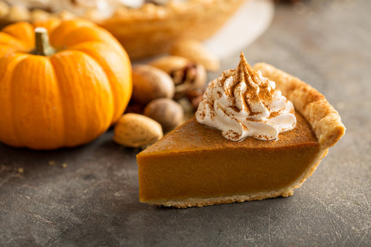

Pumpkin Pie

Description
We have over 130 recipes for homemade pumpkin pie here at Allrecipes, but this recipe takes the cake (or pie) with over 2,600 five-star ratings. And it's proof that a good recipe doesn't necessarily need to be a complicated one — you get a great result with canned pumpkin puree and store-bought pie crust. Of course, you can customize it to suit your preferences by using fresh pumpkin or a homemade pie crust for that from-scratch taste. Plus, it can be made ahead of time and refrigerated (or frozen) until you're ready to serve! Your search for the perfect pumpkin pie ends here.
How to Make Pumpkin Pie
Here's what we love about this recipe: This pie is incredibly approachable, even for novice bakers. Of course, you can add to the steps below by making your own pie crust, blind baking your crust, etc., but the whole process can really be boiled down to three simple steps.
Ingredients
- 1 (15 ounce) can pumpkin puree
- 1 (14 ounce) can EAGLE BRAND® Sweetened Condensed Milk
- 2 large eggs
- 1 teaspoon ground cinnamon
- ½ teaspoon ground ginger
- ½ teaspoon ground nutmeg
- ½ teaspoon salt
- 1 (9 inch) unbaked pie crust
Steps:
- Well, technically you'll first need to preheat the oven. Then you can start by mixing all the ingredients for your filling: pumpkin puree, sweetened condensed milk, eggs, cinnamon, ginger, nutmeg, and salt. Whisk it all together until smooth.
- Pour the mixture into your pie crust (store-bought or homemade is fine). Bake in the preheated oven.
- Now you'll reduce the heat and continue to bake. This helps the pie to cook evenly without cracking. Once a knife inserted 1 inch from the crust comes out clean, then it's ready. The center should be just a little jiggly. Let cool and serve, refrigerate, or freeze. Really, that's it!